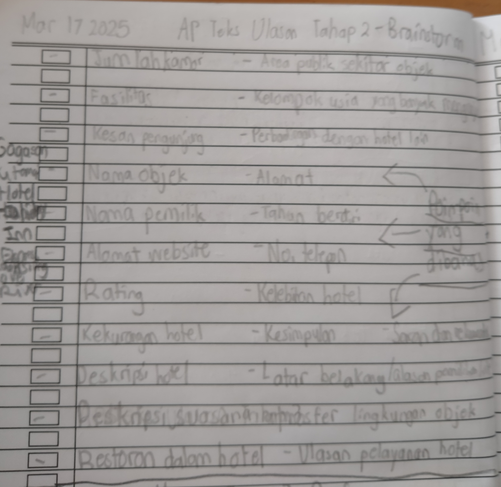
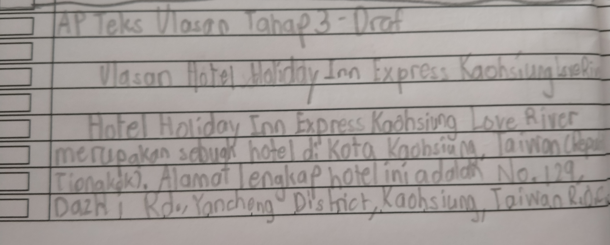
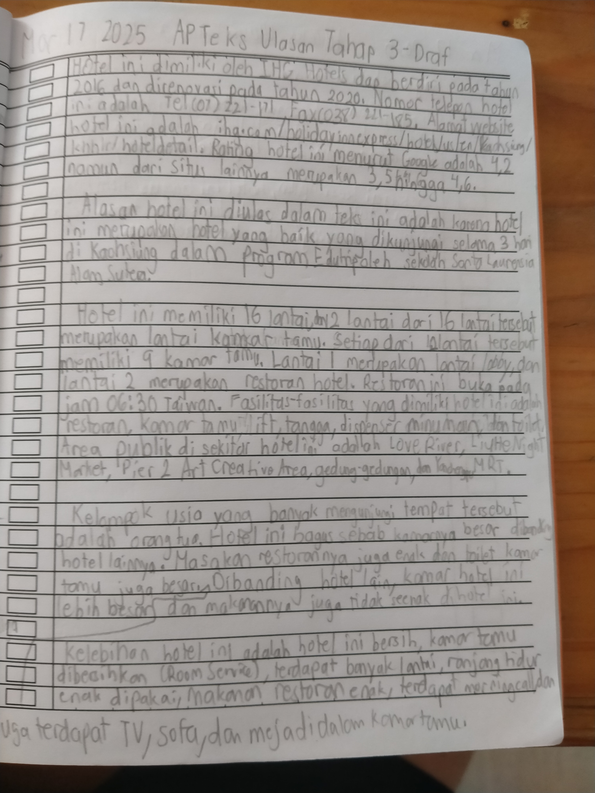
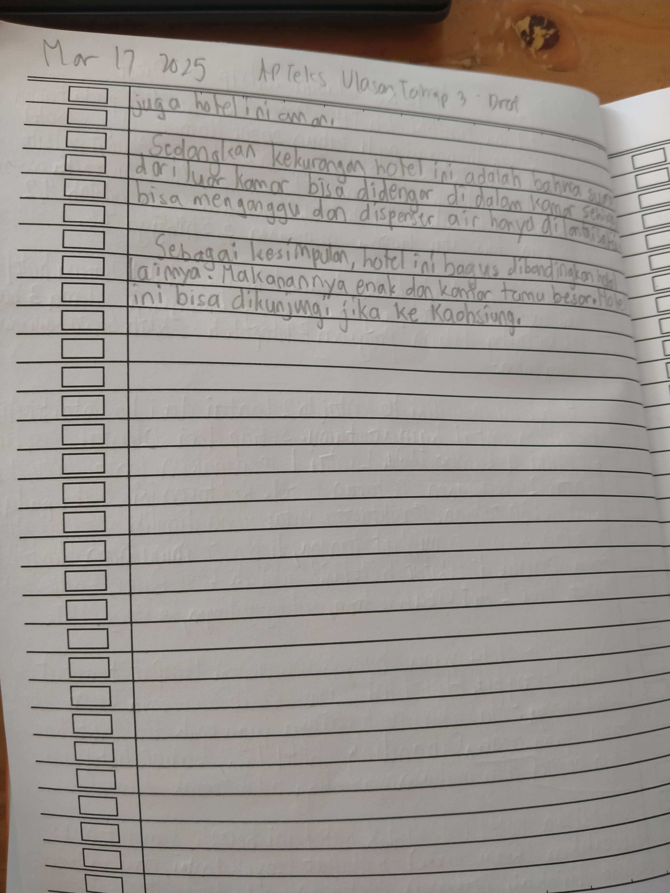

Untuk pelajaran Bahasa Indonesia, kami harus membuat sebuah teks resensi atau teks ulasan tentang satu hotel atau restoran di Edutrip.
AP ini dibagi menjadi berapa tahap:
Tahap Rancangan AP
Tahap Curah Gagasan
Tahap Draf Karangan Esai
Tahap Final Karangan Esai
Tahap Hasil Pengecekan Keaslian Karangan
Tahap Rekaman Video
Tahap Rancangan AP terdapat di dalam workbook Edutrip.
Tahap Curah Gagasan ditulis di NB Bahasa Indonesia. Dalam tahap ini, gagasan utama yang akan ditulis dalam ulasan dan poin-poin yang akan dikembangkan di dalam teks ulasan ditentukan.
Di bawah ini terdapat gambar Curah Gagasan:
Tahap Draf Karangan Esai ditulis di NB Bahasa Indonesia juga.
Di bawah ini terdapat gambar Draf Karangan Esai:
  Tahap Final Karangan Esai diketik dalam Canva.
Di bawah ini terdapat gambar Final Karangan Esai:
.png)
.png)
.png)
Tahap Hasil Pengecekan Keaslian Karangan merupakan sceenshot hasil pengecekan keaslian karangan dari sebuah website.
Di bawah ini terdapat secreenshot Hasil Pengecekan Keaslian Karangan:
.png)
.png)
Tahap Rekaman Video merupakan sebuah video tentang teks ulasannya.
Di bawah ini terdapat videonya: